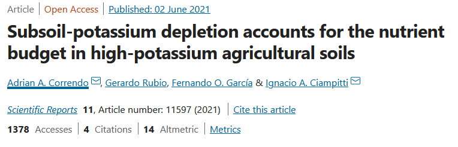
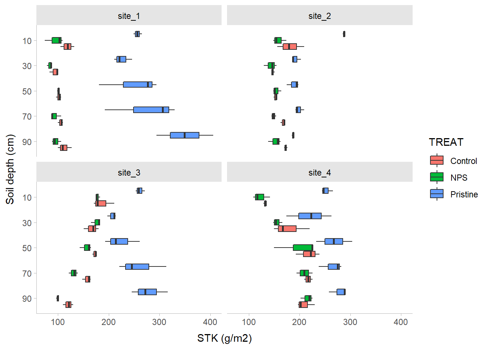
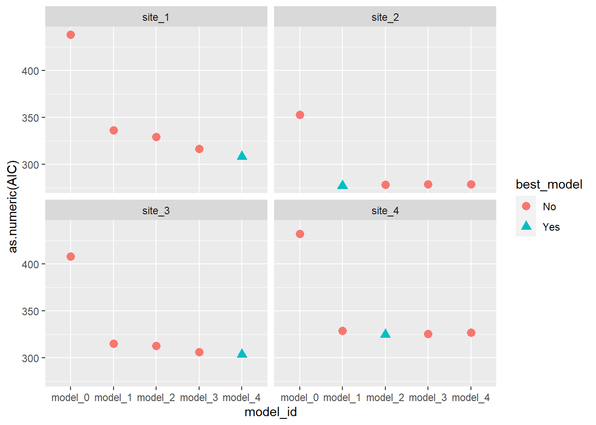
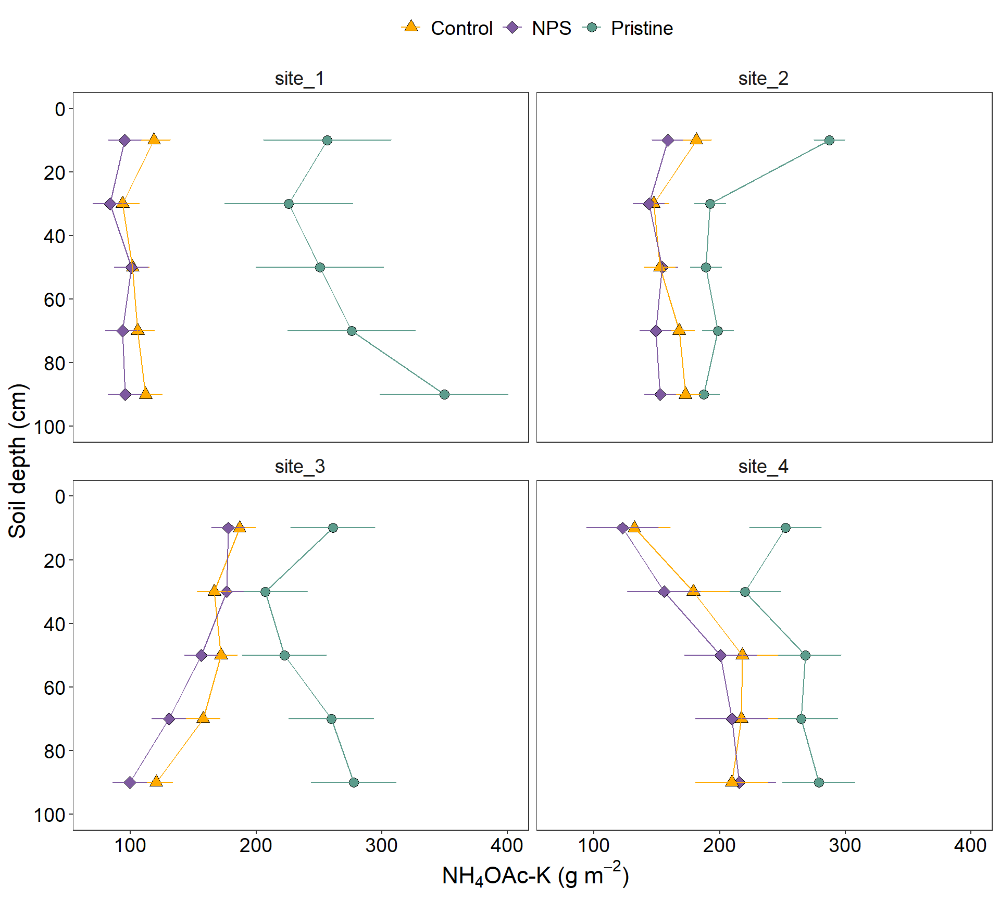
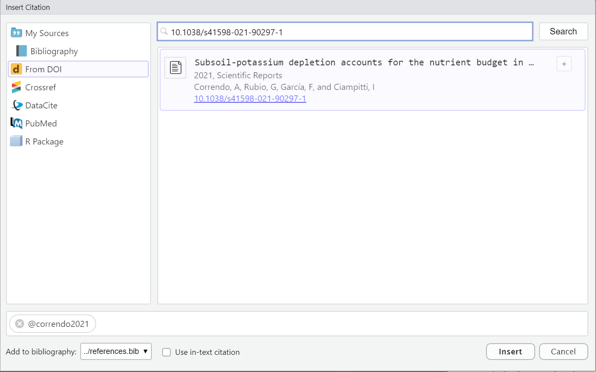

A simple guide to succeed on the analysis of common mixed models in agriculture
Author
Adrian Correndo
Published
October 19, 2022
Summary
This workshop provides a workflow to analyze common types of mixed models data in agriculture: (i) Split-Plots, and (ii) Repeated measures. From exploring the data to create a summary report with figures, we will cover how to write, test, and select from multiple candidate models at once using tidy principles and packages from the tidyverse|tidymodels framework.
What are Mixed Models?
In simple words, the rationale behind mixed models is the simultaneous presence of components that model the EXPECTED VALUE (fixed) as well as the VARIANCE (random).
Specifically, today we are going to cover LINEAR MIXED MODELS, which make the following assumptions (Ben Bolker et al. 2022):
The expected values of the responses are linear combinations of the fixed predictor variables and the random effects.
The conditional distribution of the variable response is Gaussian (equivalently, the errors are Gaussian or “Normal”).
The random effects are normally distributed. Normally, we assume that the expected value of a random effect is equal to zero, but with a positive variance.
Well, from the hand of Tidyverse, the “tidy data” framework changed the way we code and work in R for data science. Tidy datasets are easy to manipulate, model and visualize, and have a specific structure (and Wickham Hadley 2014):
Each variable is a column,
Each observation is a row, and
Each value have its own cell.
Tidy-data structure. Following three rules makes a dataset tidy: variables are in columns, observations are in rows, and values are in cells. Source: (H. Wickham and Grolemund 2017).
Some great reading…
Outline
After planning the experimental design, identifying dependent variable, independent variable(s), conducting the experiment, and collecting the data…the expected path would be as follows:
Show code
flowchart LR A[Dig the data] --> B{Model Selection} B --> C[Significant\nEffects?] subgraph Inference C -->|Yes| D[Comparisons] end
flowchart LR
A[Dig the data] --> B{Model Selection}
B --> C[Significant\nEffects?]
subgraph Inference
C -->|Yes| D[Comparisons]
end
We are going to explore the new features offered by Quarto documents (*.qmd).
Quarto is a refined version (and successor) of R-markdown. It is an open-source scientific and technical publishing system built on Pandoc. It allows to combine R, Python, Julia, and Java (Observable JS) for the design of reports, applications, websites, blogs, scientific publications, and more…
00. PACKAGES
Show code
#| echo: true#| collapse: true#install.packages("easypackages") # To load and/or install the packslibrary(easypackages)packages("readxl")# To open/save excel filespackages('dplyr', "tidyr","purrr", "forcats")# Data wranglingpackages("broom", "broom.mixed")# packages("stringr")# Edit text linespackages("performance")# Check assumptions and performancepackages("nlme", "lme4")# Mixed modelspackages("emmeans","multcomp","multcompView",
"car", "multilevelmod")# Aov and mult comppackages("ggplot2")# Figurespackages("agricolae")# Miscellaneous functions
Among many packages we are going to use today, there is one from the tidymodels family that was specially designed to convert statistical objects into tidy format: the broom package (Robinson, Hayes, and Couch 2022). Particularly for mixed models, we will also need its spinoff: the broom.mixed package (Bolker and Robinson 2022) .
The broom package offer three key functions to manipulate models’ outcomes:
glance() to report information about the entire model
tidy() to summarize information about model components, and
augment() to add information about observations to a dataset
01. SPLIT-PLOT
Split-plot arrangement is frequently used in experiments including several factors (factorial). The main characteristic is that the arrangement follows a hierarchy: there main plots (a.k.a. whole plots) covering one of the factors, and then there are “subplots” within each level of the main that include levels of a second factor, and so on. Therefore, the main plot serves as a “block” for the subplots, and thus, we are setting boundaries to (“restricting”) the randomization of the subplot factor.
Important
DESIGN: We intentionally call split-plot “arrangement” because they can fit into multiple “designs” such as completely randomized (CRD), randomized complete blocks design (RCBD), or latin-squares design (LSD).
INFERENCE POWER: What happens with split-plot design is that the main plot has less degrees of freedom than the factor at the subplot, and thus, we have more inference power at the factor in the subplot hierarchy. So consider this before it’s too late!
Create a split-plot design
The agricolae package (Mendiburu 2021) brings a set very useful functions to generate different experimental designs, among them the split-plot. Let’s see an example:
Show code
# Example with agricolae# Define plotsmainplot<-c(0,50,80,110,140)subplot<-c("Var_1", "Var_2", "Var_3")# Producesp_design<-agricolae::design.split(trt1 =mainplot, trt2 =subplot,
design ="rcbd", r =3,
randomization =TRUE, seed =4561)
i. Data
Show code
# Read csvsplit_plot_data_0<-read.csv(file ="../data/01_split_plot_data.csv", header =TRUE)# Data hierarchysplit_plot_data<-split_plot_data_0%>%mutate(NRATE =factor(NRATE))%>%# Identify Main Plot# mutate(main = factor(BLOCK:NRATE)) %>% dplyr::select(BLOCK, NRATE, VARIETY, YIELD)
ii. Dig the data
Now, let’s use several functions to explore the data.
For example, the glimpse() function from dplyr allows to take a quick look to the columns in our data frame (it’s like a transposed version of print())
Show code
# Glimpse from dplyrdplyr::glimpse(split_plot_data)
Then, the skim() function from the skimr package allows to take a deeper look to all the variables (columns), creating a quick summary that reports the presence of missing values, etc., etc.
For the analysis of split-plot designs we basically need to specify an error term that otherwise the model will not see: the MAIN PLOT ERROR TERM (see Venables and Ripley (2002), pg. 283). By default, the random term that the computer will identify is the one happening at the lowest level in the hierarchy (replication). However, we need to specify that the main plot serves as a kind of block to the design.
a. nlme::lme
Show code
# Model without split componentno_split<-nlme::lme(# Response variableYIELD~# Fixed0+NRATE*VARIETY,
# Random error of MAINPLOT (NRATE nested in BLOCK)
random =~1|BLOCK,
# Data
data =split_plot_data,
# Method
method ="REML")# Model with split componentsplit_nlme<-nlme::lme(# Response variableYIELD~# Fixed (Removing intercept? Why?)0+NRATE*VARIETY,
# Random error of MAINPLOT (NRATE nested in BLOCK)
random =~1|BLOCK/NRATE,
# Data
data =split_plot_data,
# Method
method ="REML")# Type 3 (when interaction is present)Anova(no_split, type =3)
# Let's see the difference between models in terms of DFs# summary(no_split)# summary(split_nlme)
b. lmer code (lme4)
Show code
split_lme4<-lme4::lmer(# Response variableYIELD~# Fixed (Removing intercept? Why?)0+NRATE*VARIETY+# Random(1|BLOCK/NRATE),
# Data
data=split_plot_data)# Type 3Anova(split_lme4, type =3)
# Estimate the comparisons (pairwise)split_lm4_comparisons<-split_lme4%>%# ~ specifies the level of comparison (marginal or interaction)# Since interaction was significant we specify ~ Interaction (Factor1*Factor2)emmeans(., ~NRATE*VARIETY)# Add letterssplit_lm4_comparisons%>%# Compact Letters Display (cld)cld(.,
# Specify grouped comparisons by...
by ="VARIETY",
# Order
decreasing =TRUE, details=FALSE, reversed=TRUE,
# Specs
alpha=0.05, adjust ="tukey", Letters=LETTERS)
VARIETY = Var_1:
NRATE emmean SE df lower.CL upper.CL .group
80 8358 301 30 7401 9315 A
110 7967 301 30 7010 8924 AB
140 7601 301 30 6644 8558 AB
50 7287 301 30 6330 8244 AB
0 7036 301 30 6079 7993 B
VARIETY = Var_2:
NRATE emmean SE df lower.CL upper.CL .group
140 9811 301 30 8854 10768 A
110 9448 301 30 8491 10405 AB
80 9111 301 30 8154 10068 AB
50 8539 301 30 7582 9496 BC
0 7686 301 30 6729 8643 C
VARIETY = Var_3:
NRATE emmean SE df lower.CL upper.CL .group
140 11859 301 30 10902 12816 A
80 11087 301 30 10130 12044 AB
110 10966 301 30 10009 11923 AB
50 10404 301 30 9447 11361 B
0 9001 301 30 8044 9958 C
Degrees-of-freedom method: kenward-roger
Confidence level used: 0.95
Conf-level adjustment: sidak method for 15 estimates
P value adjustment: tukey method for comparing a family of 5 estimates
significance level used: alpha = 0.05
NOTE: Compact letter displays can be misleading
because they show NON-findings rather than findings.
Consider using 'pairs()', 'pwpp()', or 'pwpm()' instead.
02. REPEATED MEASURES
Now, we are going to reproduce the analysis I’ve done for one of my papers (Correndo et al. 2021). Particularly, we are going to reproduce Figure 2

For this paper, we have data from 4 different locations. We tested the levels of soil potassium fertility, hereinafter as soil test K (STK), in long-term experiments (2000-2009) where the treatments of interest were: (i) Control (unfertilized), (ii) NPS (fertilized with NPS), and (iii) Pristine conditions (No Ag-history).
At each plot/sample, the STK was measured at five-consecutive soil depths (0-20, 20-40, 40-60, 60-80, and 80-100 cm). Thus, they we took “repeated measurements” over the space.
We were NOT interested in comparing locations since they had very different previous history, and crop rotation, so confounding effects may have obscured the inference. Therefore, location|site was not a factor under consideration, and all the analysis were fitted independently by site.
i. Data
Show code
# Read filedata<-read_excel("../data/02_repeated_measures_data.xlsx", col_names =TRUE)%>%# Create PLOT column to identify subject (Exp. Unit for Rep. Measures)unite(PLOT, BLOCK,TREAT, sep ="_", remove=FALSE)%>%# OR# Identify Subplotungroup()%>%group_by(BLOCK, TREAT)%>%# Create plot ID # Needed for Repeated Measuresmutate(plot =cur_group_id(), .after =PLOT)%>%ungroup()%>%mutate(DEPTH =as.factor(DEPTH),
depth =as.integer(DEPTH), # Needed for CorAR1
BLOCK =factor(BLOCK),
SITE =factor(SITE),
TREAT =factor(TREAT),
# Create a grouping variable (WHY?) # Needed for HetVar
GROUP =case_when(TREAT=="Pristine"~"Pristine",
TRUE~"Agriculture"))
ii. Dig the data
Now, let’s use several functions to explore the data.
# Boxplotdata%>%dplyr::select(-depth)%>%# Plotggplot()+# Boxplotsgeom_boxplot(aes(x =reorder(DEPTH, desc(DEPTH)), y =STK, fill =TREAT))+# Plot by sitefacet_wrap(~SITE)+# Flip axescoord_flip()+scale_x_discrete()+tidybayes::theme_tidybayes()

iii. Candidate Models
I’m sorry for this, but the most important step is ALWAYS to write down the model.
a. Formulae
m0. Block Fixed
In a traditional approach blocks are defined as fixed, affecting the mean of the expected value. Yet there is no consensus about treating blocks as fixed or as random. For more information, read Dixon (2016).
Let’s define the model. For simplification (and avoid writing interaction terms), here we are going to consider that \(\tau_i\) is the “treatment”.
\[ \epsilon_{ij} \sim N(0, \sigma^2_{e} )\] where \(\mu\) represents the overall mean (if intercept is used), \(\tau_i\) is the effect of treatment-j over \(\mu\), \(\beta_j\) is the effect of block-j over \(\mu\), and \(\epsilon_{ij}\) is the random effect of each experimental unit.
Show code
# SIMPLEST MODELfit_block_fixed<-function(x){lm(# Response variableSTK~# FixedTREAT+DEPTH+TREAT:DEPTH+BLOCK,
# Data
data =x)}
m1. Block Random
An alternative approach is considering a MIXED MODEL, where blocks are considered “random”. Basically, we add a term to the model that it is expected to show a “null” overall effect over the mean of the variable of interest but introduces “noise”. By convention, a random effect is expected to have an expected value equal to zero but a positive variance as follows: \[ y_{ij} = \mu + \tau_i + \beta_j + \epsilon_{ij} \]\[ \beta_j \sim N(0, \sigma^2_{b} )\]\[ \epsilon_{ij} \sim N(0, \sigma^2_{e} )\] Similar than before, \(\mu\) represents the overall mean (if intercept is used), \(\tau_i\) is the effect of treatment-j over \(\mu\), \(\beta_j\) is the “random” effect of block-j over \(\mu\), and \(\epsilon_{ij}\) is the random effect of each experimental unit.
So what’s the difference? Simply specifying this component: \[ \beta_j \sim N(0, \sigma^2_b) \], which serves to model the variance.
How do we write that?
Show code
# RANDOM BLOCKfit_block_random<-function(x){nlme::lme(# FixedSTK~TREAT+DEPTH+TREAT:DEPTH,
# Random
random =~1|BLOCK,
# Data
data =x)}
Models w/ correlated ERRORS
Until here all sounds easy. However, we are (potentially) missing a key component. All measures involving DEPTH have been taken from the same “subjects” (experimental units/plots). So we do have “repeated measures” over space. Thus, it is highly likely that using depth implies the need to adjust the error correlation and covariance structure. Let’s explore some options…
m2. m1 + CompSymm
Compound symmetry is the simplest covariance structure, where we include a within-subject correlated errors. It is basically the same we do with including BLOCKS as random. We are telling the model that the observations within a given “depth” “share” something, they have something in common (the error).
Show code
# RANDOM BLOCK w/compound symmetry error correlation structurefit_corsymm<-function(x){lme(# Response VariableSTK~# FixedTREAT+DEPTH+TREAT:DEPTH,
# Random
random =~1|BLOCK,
# Identify subject where repeated measure happens# Plots nested within blocks.
correlation =corCompSymm(form =~DEPTH|BLOCK/PLOT),
# Data
data=x)}
m3. m1 + CorAR1
The autoregressive of first order structure (CorAR1) considers correlations dependent of the “distance”. Thus, correlation of error is expected to be the highest between adjacent depths (e.g. 0-20 and 20-40 cm), and a systematically decrease with the distance. For example, the correlation between depth 1 and depth 2 would be \(\rho^{depth_2-depth_1}\), and then less and less, ending with the correlation between depth 5 and depth 1 equal to \(\rho^{depth_5-depth_1}\).
Danger
An important detail here is that CorAR1 structure is only applicable for evenly spaced intervals!
Show code
# RANDOM BLOCK w/ auto-regressive of 1st order as error correlation structurefit_ar1<-function(x){lme(STK~TREAT+DEPTH+TREAT:DEPTH,
random =~1|BLOCK,
correlation=corAR1(form=~depth|BLOCK/PLOT),
data=x)}
m4. m3 + HetVar
Did you know that we can “relax” the assumption about homogeneity of variance? Oftentimes we have data that shows different variability depending on the level of a given factor or variable.
In the STK dataset, we observed that the “Pristine” treatment (or agriculture condition) present a higher variability compared to Control and NPS treatments, probably linked to higher values of STK. Variance is modeled by adding a “weight”. This “weight” could be a function of a continuous variable (e.g. fertilizer rate?) or, like in our case, based on a “categorical” variable.
Show code
# RANDOM BLOCK w/compound symmetry error correlation structure + Heterogeneous Variancefit_corsymm_hetvar<-function(x){lme(# Response variableSTK~# FixedTREAT+DEPTH+TREAT:DEPTH,
# Random
random =~1|BLOCK,
# Correlation
correlation =corCompSymm(form =~depth|BLOCK/PLOT),
# Variance
weights =varComb(varIdent(form=~1|GROUP)),
# Data
data=x)}
b. Fit
Run the candidate models
Show code
STK_models<-data%>%# Let's group data to run multiple locations|datasets at oncegroup_by(SITE)%>%# Store the data per location using nested arrangementnest()%>%# BLOCK as FIXED mutate(model_0 =map(data, fit_block_fixed))%>%# BLOCK as RANDOMmutate(model_1 =map(data, fit_block_random))%>%# COMPOUND SYMMETRYmutate(model_2 =map(data, fit_corsymm))%>%# AUTO-REGRESSIVE ORDER 1mutate(model_3 =map(data, fit_ar1))%>%# COMPOUND SYMMETRY + HETEROSKEDASTICmutate(model_4 =map(data, fit_corsymm_hetvar))%>%# Data wranglingpivot_longer(cols =c(model_0:model_4), # show alternative 'contains' model
names_to ="model_id",
values_to ="model")%>%# Map over model columnmutate(results =map(model, broom.mixed::augment))%>%# Performancemutate(performance =map(model, broom.mixed::glance))%>%# Extract AICmutate(AIC =map(performance, ~.x$AIC))%>%# Extract coefficientsmutate(coef =map(model, ~coef(.x)))%>%# Visual-check plotsmutate(checks =map(model, ~performance::check_model(.)))%>%ungroup()
Could not compute standard errors from random effects for diagnostic plot.
Homogeneity of variance could not be computed. Cannot extract residual variance from objects of class 'lme'.
Could not compute standard errors from random effects for diagnostic plot.
Homogeneity of variance could not be computed. Cannot extract residual variance from objects of class 'lme'.
Could not compute standard errors from random effects for diagnostic plot.
Homogeneity of variance could not be computed. Cannot extract residual variance from objects of class 'lme'.
Could not compute standard errors from random effects for diagnostic plot.
Homogeneity of variance could not be computed. Cannot extract residual variance from objects of class 'lme'.
Could not compute standard errors from random effects for diagnostic plot.
Homogeneity of variance could not be computed. Cannot extract residual variance from objects of class 'lme'.
Could not compute standard errors from random effects for diagnostic plot.
Homogeneity of variance could not be computed. Cannot extract residual variance from objects of class 'lme'.
Could not compute standard errors from random effects for diagnostic plot.
Homogeneity of variance could not be computed. Cannot extract residual variance from objects of class 'lme'.
Could not compute standard errors from random effects for diagnostic plot.
Homogeneity of variance could not be computed. Cannot extract residual variance from objects of class 'lme'.
Could not compute standard errors from random effects for diagnostic plot.
Homogeneity of variance could not be computed. Cannot extract residual variance from objects of class 'lme'.
Could not compute standard errors from random effects for diagnostic plot.
Homogeneity of variance could not be computed. Cannot extract residual variance from objects of class 'lme'.
Could not compute standard errors from random effects for diagnostic plot.
Homogeneity of variance could not be computed. Cannot extract residual variance from objects of class 'lme'.
Could not compute standard errors from random effects for diagnostic plot.
Homogeneity of variance could not be computed. Cannot extract residual variance from objects of class 'lme'.
Could not compute standard errors from random effects for diagnostic plot.
Homogeneity of variance could not be computed. Cannot extract residual variance from objects of class 'lme'.
Could not compute standard errors from random effects for diagnostic plot.
Homogeneity of variance could not be computed. Cannot extract residual variance from objects of class 'lme'.
Could not compute standard errors from random effects for diagnostic plot.
Homogeneity of variance could not be computed. Cannot extract residual variance from objects of class 'lme'.
Could not compute standard errors from random effects for diagnostic plot.
Homogeneity of variance could not be computed. Cannot extract residual variance from objects of class 'lme'.
c. Check
Checking assumptions is always important. To learn more about data exploration, tools to detect outliers, heterogeneity of variance, collinearity, dependence of observations, problems with interactions, among others, I highly recommend reading (Zuur, Ieno, and Elphick 2010).
Show code
# Extracting by sitesite_1_models<-STK_models%>%dplyr::filter(SITE=="site_1")site_2_models<-STK_models%>%dplyr::filter(SITE=="site_3")site_3_models<-STK_models%>%dplyr::filter(SITE=="site_4")site_4_models<-STK_models%>%dplyr::filter(SITE=="site_2")
# Visual model selectionbest_STK_models<-STK_models%>%group_by(SITE)%>%mutate(best_model =case_when(AIC==min(as.numeric(AIC))~"Yes",
TRUE~"No"))%>%ungroup()# Plotbest_STK_models%>%ggplot()+geom_point(aes(x =model_id, y =as.numeric(AIC), color =best_model))+facet_wrap(~SITE)

Show code
# Final modelsselected_models<-best_STK_models%>%dplyr::filter(best_model=="Yes")
e. ANOVA
Estimate the effects of factors under study (and their interaction)
Show code
models_effects<-selected_models%>%# Type 3 Sum of Squares (Partial SS)mutate(ANOVA =map(model, ~Anova(., type =3)))# Extract ANOVASmodels_effects$ANOVA[[1]]
# MULTCOMPARISON# emmeans and cld multcomp# We need to specify ourselves the most important interaction to perform the comparisonsmult_comp<-models_effects%>%# Comparisons estimates (emmeans)mutate(mc_estimates =map(model, ~emmeans(., ~TREAT*DEPTH)))%>%# Assign letters and p-value adjustment (multcomp)mutate(mc_letters =map(mc_estimates,
~as.data.frame(# By specifies a strata or level to assign the letterscld(., by ="DEPTH", decreasing =TRUE, details=FALSE,
reversed=TRUE, alpha=0.05, adjust ="tukey", Letters=LETTERS))))
# Create data frame for plotplot_df<-mult_comp%>%dplyr::select(SITE, mc_letters)%>%unnest(mc_letters)# Define your own colorsmy_colors<-c("#ffaa00", "#7E5AA0", "#5c9c8c")# Create the plotSTK_plot<-plot_df%>%# We need to re-express DEPTH from factor to character, and then to numericmutate(DEPTH =as.numeric(as.character(DEPTH)))%>%# Re-order levels of the factorsmutate(TREAT =fct_relevel(TREAT,"Control", "NPS", "Pristine"))%>%mutate(SITE =fct_relevel(SITE,"site_1", "site_2", "site_3", "site_4"))%>%# Create plotggplot()+# 01. LAYOUT## Subplotsfacet_wrap(~SITE, nrow =2)+## Axis titleslabs(x ="Soil depth (cm)", y =bquote(~NH[4]*'OAc-K (g'~m^-2*')'))+# 02. GEOMETRIES## i. Pointsgeom_point(aes(x =DEPTH, y =emmean,
fill=TREAT,
shape =TREAT),
size =3, col ="black")+## Adjust shape aestheticsscale_shape_manual(name="Fertilizer Scenario", values=c(24,23,21),
guide="legend")+scale_colour_manual(name="Fertilizer Scenario",
values =my_colors,
guide='legend')+scale_fill_manual(name="Fertilizer Scenario",
values =my_colors,
guide='legend')+## ii. Add error bargeom_errorbar(width =0.25, aes(x =DEPTH, color =TREAT,
ymin =emmean-2*SE, ymax =emmean+2*SE))+## iii. Add linegeom_line(size =0.5,aes(x =DEPTH, y =emmean, color =TREAT))+# 03. ADJUST XY AXIS## Reverse the scalescale_x_reverse(breaks=seq(0, 100, 20), limits =c(100,0))+coord_flip()+# 04. THEMEtheme_bw()+theme(strip.text =element_text(size =rel(1.25)),
strip.background =element_blank(),
# Grid
panel.grid =element_blank(),
# Axis
axis.title =element_text(size =rel(1.5)),
axis.text =element_text(size =rel(1.25), color ="black"),
# Legend
legend.position ="top", legend.title =element_blank(),
legend.text =element_text(size =rel(1.25)))
i. Figure with caption
Show code
STK_plot

Figure 2. Soil profiles of STK (\(g m^{-2}\)) under three different conditions: pristine soils (green circles), under grain cropping from 2000 to 2009 with no fertilizers added (Control, orange triangles), and under grain cropping from 2000 to 2009 with N, P, plus S fertilization (NPS, purple diamonds). Overlapping error bars indicate absence of significant differences between scenarios by soil depths combinations (Tukey’s HSD, p < 0.05).
☺
03. ADDING REFERENCES
i. Citations
Adding references with Quarto has become quite easy. Let’s see…
Using a “*.bib” file: Figures were produced using the ggplot2 package (H. Wickham 2016). Models check were tested with the performance package (Lüdecke et al. 2021).
Using Footnotes: For example, this is some text with a Footnote1, this is a second Footnote2
Using visual editor: this option introduced by Quarto is simply awesome! 🤩. Let’s see. Insert -> Citation or “Crtl + Shift + F8”. With this option we can look for citations online via DOI, Crossref, etc… and insert them into our document (and to our *.bib file).

BIBLIOGRAPHY
Ben Bolker, Julia Piaskowski, Emi Tanaka, Phillip Alday, and Wolfgang Viechtbauer. 2022. CRAN Task View: Mixed, Multilevel, and Hierarchical Models in r. Version 2022-10-18.https://cran.r-project.org/view=MixedModels.
Correndo, Adrian A., Gerardo Rubio, Fernando O. García, and Ignacio A. Ciampitti. 2021. “Subsoil-Potassium Depletion Accounts for the Nutrient Budget in High-Potassium Agricultural Soils.”Scientific Reports 11 (1). https://doi.org/10.1038/s41598-021-90297-1.
Dixon, Philip. 2016. “Should Blocks Be Fixed or Random?”Conference on Applied Statistics in Agriculture, May 1-3, Kansas State University, 23–39. https://doi.org/10.4148/2475-7772.1474.
Lüdecke, Daniel, Mattan S. Ben-Shachar, Indrajeet Patil, Philip Waggoner, and Dominique Makowski. 2021. “performance: An R Package for Assessment, Comparison and Testing of Statistical Models.”Journal of Open Source Software 6 (60): 3139. https://doi.org/10.21105/joss.03139.
Wickham, Hadley. 2016. Ggplot2: Elegant Graphics for Data Analysis. Springer-Verlag New York. https://ggplot2.tidyverse.org.
Wickham, Hadley, and Garrett Grolemund. 2017. R for Data Science: Import, Tidy, Transform, Visualize, and Model Data. 1st ed. Paperback; O’Reilly Media. http://r4ds.had.co.nz/.
Zuur, Alain F., Elena N. Ieno, and Chris S. Elphick. 2010. “A Protocol for Data Exploration to Avoid Common Statistical Problems.”Methods in Ecology and Evolution 1 (1): 3–14. https://doi.org/https://doi.org/10.1111/j.2041-210X.2009.00001.x.
---title: "Tidy Mixed Models in R"subtitle: "A simple guide to succeed on the analysis of common mixed models in agriculture"author: "Adrian Correndo"date: 10-19-2022abstract-title: 'Summary'abstract: 'This workshop provides a workflow to analyze common types of mixed models data in agriculture: (i) Split-Plots, and (ii) Repeated measures. From exploring the data to create a summary report with figures, we will cover how to write, test, and select from multiple candidate models at once using tidy principles and packages from the tidyverse|tidymodels framework.'format: html: code-tools: true code-fold: true code-summary: 'Show code' code-link: true theme: unitedtoc: truetoc-title: 'Contents'toc-depth: 4toc-location: leftnumber-sections: falsehighlight-style: pygmentssmooth-scroll: truebibliography: ../references.biblink-citations: TRUE---```{r, setup}#| include: falseknitr::opts_chunk$set(echo =TRUE,message =FALSE,warning =FALSE,tidy =TRUE )```# What are Mixed Models?In simple words, the rationale behind mixed models is the simultaneous presence of components that model the EXPECTED VALUE (fixed) as well as the VARIANCE (random).Specifically, today we are going to cover LINEAR MIXED MODELS, which make the following assumptions [@Bolker_etal_2022]:- The **expected values** of the responses are **linear combinations** of the fixed predictor variables and the random effects.- The conditional distribution of the variable response is Gaussian (equivalently, the errors are Gaussian or "Normal").- The random effects are normally distributed. Normally, we assume that the expected value of a random effect is equal to zero, but with a positive variance.For more information about more types of mixed models and what options we have available in R, please, check out the new [CRAN Task View: Mixed, Multilevel, and Hierarchical Models in R](https://cran.r-project.org/web/views/MixedModels.html).# Why TIDY?Well, from the hand of [Tidyverse](https://www.tidyverse.org/), the "tidy data" framework changed the way we code and work in R for data science. Tidy datasets are easy to manipulate, model and visualize, and have a specific structure [@wickham2014]:- Each variable is a column,- Each observation is a row, and- Each value have its own cell.**Tidy-data structure**. Following three rules makes a dataset tidy: variables are in columns, observations are in rows, and values are in cells. Source: [@Wickham2017R].::: {layout-ncol="2"}Some great reading...[{height="300"}](https://r4ds.had.co.nz/)[{height="300"}](https://www.tmwr.org/):::# OutlineAfter planning the experimental design, identifying dependent variable, independent variable(s), conducting the experiment, and collecting the data...the expected path would be as follows:```{mermaid}%%| echo: trueflowchart LR A[Dig the data] --> B{Model Selection} B --> C[Significant\nEffects?] subgraph Inference C -->|Yes| D[Comparisons] end```This workflow has been created using [mermaid](https://mermaid-js.github.io/mermaid/#/)# THE CODE## What do you need?For a complete experience, I recommend you download and install the:- [Latest version of R](https://www.r-project.org/)- [Latest version of RStudio](https://www.rstudio.com/products/rstudio/download/)## What is Quarto?We are going to explore the new features offered by [Quarto](https://quarto.org) documents (\*.qmd).Quarto is a refined version (and successor) of [R-markdown](https://rmarkdown.rstudio.com/). It is an open-source scientific and technical publishing system built on [Pandoc](https://pandoc.org/). It allows to combine R, Python, Julia, and Java (Observable JS) for the design of reports, applications, websites, blogs, scientific publications, and more...# 00. PACKAGES```{r packages}#| echo: true#| collapse: true#install.packages("easypackages") # To load and/or install the packslibrary(easypackages)packages("readxl") # To open/save excel filespackages('dplyr', "tidyr","purrr", "forcats") # Data wranglingpackages("broom", "broom.mixed") # packages("stringr") # Edit text linespackages("performance") # Check assumptions and performancepackages("nlme", "lme4") # Mixed modelspackages("emmeans","multcomp","multcompView","car", "multilevelmod") # Aov and mult comppackages("ggplot2") # Figurespackages("agricolae") # Miscellaneous functions```Among many packages we are going to use today, there is one from the [tidymodels family](https://www.tidymodels.org/) that was specially designed to convert statistical objects into tidy format: the *broom* package [@broom]. Particularly for mixed models, we will also need its `spinoff`: the *broom.mixed* package [@broom.mixed] .[{width="168"}](https://broom.tidymodels.org/)The broom package offer three key functions to manipulate models' outcomes:- `glance()` to report information about the entire model- `tidy()` to summarize information about model components, and- `augment()` to add information about observations to a dataset# 01. SPLIT-PLOTSplit-plot arrangement is frequently used in experiments including several factors (factorial). The main characteristic is that the arrangement follows a hierarchy: there main plots (a.k.a. whole plots) covering one of the factors, and then there are "subplots" within each level of the main that include levels of a second factor, and so on. Therefore, the main plot serves as a "block" for the subplots, and thus, we are setting boundaries to ("restricting") the randomization of the subplot factor.::: callout-important- DESIGN: We intentionally call split-plot "arrangement" because they can fit into multiple "designs" such as completely randomized (CRD), randomized complete blocks design (RCBD), or latin-squares design (LSD).- INFERENCE POWER: What happens with split-plot design is that the main plot has less degrees of freedom than the factor at the subplot, and thus, we have more inference power at the factor in the subplot hierarchy. So consider this before it's too late!:::## Create a split-plot designThe *agricolae* package [@agricolae] brings a set very useful functions to generate different experimental designs, among them the split-plot. Let's see an example:```{r agricolae}# Example with agricolae# Define plotsmainplot <-c(0,50,80,110,140)subplot <-c("Var_1", "Var_2", "Var_3")# Producesp_design <- agricolae::design.split(trt1 = mainplot, trt2 = subplot, design ="rcbd", r =3, randomization =TRUE, seed =4561)```## i. Data```{r split_plot_data}# Read csvsplit_plot_data_0 <-read.csv(file ="../data/01_split_plot_data.csv", header =TRUE)# Data hierarchysplit_plot_data <- split_plot_data_0 %>%mutate(NRATE =factor(NRATE)) %>%# Identify Main Plot# mutate(main = factor(BLOCK:NRATE)) %>% dplyr::select(BLOCK, NRATE, VARIETY, YIELD)```## ii. Dig the dataNow, let's use several functions to explore the data.For example, the `glimpse()` function from dplyr allows to take a quick look to the columns in our data frame (it's like a transposed version of `print()`)```{r glimpse}# Glimpse from dplyrdplyr::glimpse(split_plot_data)```Then, the `skim()` function from the skimr package allows to take a deeper look to all the variables (columns), creating a quick summary that reports the presence of missing values, etc., etc.```{r skimr}# Skim from skimrskimr::skim(split_plot_data)```## iii. ModelsFor the analysis of split-plot designs we basically need to specify an error term that otherwise the model will not see: the MAIN PLOT ERROR TERM (see Venables and Ripley (2002), pg. 283). By default, the random term that the computer will identify is the one happening at the lowest level in the hierarchy (replication). However, we need to specify that the main plot serves as a kind of block to the design.### a. nlme::lme```{r sp_nlme}# Model without split componentno_split <- nlme::lme(# Response variable YIELD ~# Fixed0+ NRATE*VARIETY,# Random error of MAINPLOT (NRATE nested in BLOCK)random =~1|BLOCK, # Datadata = split_plot_data,# Methodmethod ="REML")# Model with split componentsplit_nlme <- nlme::lme(# Response variable YIELD ~# Fixed (Removing intercept? Why?)0+ NRATE*VARIETY,# Random error of MAINPLOT (NRATE nested in BLOCK)random =~1|BLOCK/NRATE, # Datadata = split_plot_data,# Methodmethod ="REML")# Type 3 (when interaction is present)Anova(no_split, type =3)# Let's see the difference between models in terms of DFs# summary(no_split)# summary(split_nlme)```### b. lmer code (lme4)```{r sp_lme4}split_lme4 <- lme4::lmer(# Response variable YIELD ~# Fixed (Removing intercept? Why?)0+NRATE*VARIETY +# Random (1|BLOCK/NRATE), # Datadata=split_plot_data)# Type 3Anova(split_lme4, type =3)```## iv. Check assumptions```{r sp_check}#| fig.height: 10#| fig.width: 6# Single testsperformance::check_normality(split_lme4)performance::check_homogeneity(split_lme4)performance::check_autocorrelation(split_lme4)performance::check_outliers(split_lme4)performance::check_collinearity(split_lme4)# Check Plotsperformance::check_model(split_lme4)```## v. Comparisons```{r sp_comparisons}# Estimate the comparisons (pairwise)split_lm4_comparisons <- split_lme4 %>%# ~ specifies the level of comparison (marginal or interaction)# Since interaction was significant we specify ~ Interaction (Factor1*Factor2)emmeans(., ~NRATE*VARIETY)# Add letterssplit_lm4_comparisons %>%# Compact Letters Display (cld)cld(., # Specify grouped comparisons by...by ="VARIETY", # Orderdecreasing =TRUE, details=FALSE, reversed=TRUE, # Specsalpha=0.05, adjust ="tukey", Letters=LETTERS)```# 02. REPEATED MEASURESNow, we are going to reproduce the analysis I've done for one of my papers [@correndo2021]. Particularly, we are going to reproduce [**Figure 2**](https://www.nature.com/articles/s41598-021-90297-1#Fig2)For this paper, we have data from 4 different locations. We tested the levels of soil potassium fertility, hereinafter as soil test K (STK), in long-term experiments (2000-2009) where the treatments of interest were: (i) Control (unfertilized), (ii) NPS (fertilized with NPS), and (iii) Pristine conditions (No Ag-history).At each plot/sample, the STK was measured at five-consecutive soil depths (0-20, 20-40, 40-60, 60-80, and 80-100 cm). Thus, they we took "repeated measurements" over the space.We were NOT interested in comparing locations since they had very different previous history, and crop rotation, so confounding effects may have obscured the inference. Therefore, location\|site was not a factor under consideration, and all the analysis were fitted independently by site.## i. Data```{r rm_data}# Read filedata <-read_excel("../data/02_repeated_measures_data.xlsx", col_names =TRUE) %>%# Create PLOT column to identify subject (Exp. Unit for Rep. Measures)unite(PLOT, BLOCK,TREAT, sep ="_", remove=FALSE) %>%# OR# Identify Subplotungroup() %>%group_by(BLOCK, TREAT) %>%# Create plot ID # Needed for Repeated Measuresmutate(plot =cur_group_id(), .after = PLOT) %>%ungroup() %>%mutate(DEPTH =as.factor(DEPTH),depth =as.integer(DEPTH), # Needed for CorAR1BLOCK =factor(BLOCK),SITE =factor(SITE),TREAT =factor(TREAT),# Create a grouping variable (WHY?) # Needed for HetVarGROUP =case_when(TREAT =="Pristine"~"Pristine",TRUE~"Agriculture") )```## ii. Dig the dataNow, let's use several functions to explore the data.First, the `glimpse()` function from dplyr```{r rm_glimpse}# Glimpse from dplyrdplyr::glimpse(data)```Then, the `skim()` function from skmir```{r rm_skimr}# Skim from skimrskimr::skim(data)``````{r rm_ggplot}# Boxplotdata %>% dplyr::select(-depth) %>%# Plotggplot() +# Boxplotsgeom_boxplot(aes(x =reorder(DEPTH, desc(DEPTH)), y = STK, fill = TREAT))+# Plot by sitefacet_wrap(~SITE)+# Flip axescoord_flip()+scale_x_discrete()+ tidybayes::theme_tidybayes()```## iii. Candidate ModelsI'm sorry for this, but the most important step is ALWAYS to write down the model.### a. Formulae#### m0. Block FixedIn a traditional approach blocks are defined as fixed, affecting the mean of the expected value. Yet there is no consensus about treating blocks as fixed or as random. For more information, read @Dixon_2016.Let's define the model. For simplification (and avoid writing interaction terms), here we are going to consider that $\tau_i$ is the "treatment".$$ y_{ij} = \mu + \tau_i + \beta_j + \epsilon_{ij} $$$$ \epsilon_{ij} \sim N(0, \sigma^2_{e} )$$ where $\mu$ represents the overall mean (if intercept is used), $\tau_i$ is the effect of treatment-j over $\mu$, $\beta_j$ is the effect of block-j over $\mu$, and $\epsilon_{ij}$ is the random effect of each experimental unit.```{r block_fixed}# SIMPLEST MODELfit_block_fixed <-function(x){lm(# Response variable STK ~# Fixed TREAT + DEPTH + TREAT:DEPTH + BLOCK,# Datadata = x) }```#### m1. Block RandomAn alternative approach is considering a MIXED MODEL, where blocks are considered "random". Basically, we add a term to the model that it is expected to show a "null" overall effect over the mean of the variable of interest but introduces "noise". By convention, a random effect is expected to have an expected value equal to zero but a positive variance as follows: $$ y_{ij} = \mu + \tau_i + \beta_j + \epsilon_{ij} $$ $$ \beta_j \sim N(0, \sigma^2_{b} )$$ $$ \epsilon_{ij} \sim N(0, \sigma^2_{e} )$$ Similar than before, $\mu$ represents the overall mean (if intercept is used), $\tau_i$ is the effect of treatment-j over $\mu$, $\beta_j$ is the "random" effect of block-j over $\mu$, and $\epsilon_{ij}$ is the random effect of each experimental unit.So what's the difference? Simply specifying this component: $$ \beta_j \sim N(0, \sigma^2_b) $$, which serves to model the variance.How do we write that?```{r block_random}# RANDOM BLOCKfit_block_random <-function(x){ nlme::lme(# Fixed STK ~ TREAT + DEPTH + TREAT:DEPTH,# Randomrandom =~1|BLOCK,# Datadata = x) }```### Models w/ correlated ERRORSUntil here all sounds easy. However, we are (potentially) missing a key component. All measures involving DEPTH have been taken from the same "subjects" (experimental units/plots). So we do have "repeated measures" over space. Thus, it is highly likely that using depth implies the need to adjust the error correlation and covariance structure. Let's explore some options...#### m2. m1 + CompSymmCompound symmetry is the simplest covariance structure, where we include a within-subject correlated errors. It is basically the same we do with including BLOCKS as random. We are telling the model that the observations within a given "depth" "share" something, they have something in common (the error).```{r comp_symm}# RANDOM BLOCK w/compound symmetry error correlation structurefit_corsymm <-function(x){lme(# Response Variable STK ~# Fixed TREAT + DEPTH + TREAT:DEPTH,# Randomrandom =~1|BLOCK,# Identify subject where repeated measure happens# Plots nested within blocks.correlation =corCompSymm(form =~ DEPTH |BLOCK/PLOT), # Data data=x) }```#### m3. m1 + CorAR1The autoregressive of first order structure (CorAR1) considers correlations dependent of the "distance". Thus, correlation of error is expected to be the highest between adjacent depths (e.g. 0-20 and 20-40 cm), and a systematically decrease with the distance. For example, the correlation between depth 1 and depth 2 would be $\rho^{depth_2-depth_1}$, and then less and less, ending with the correlation between depth 5 and depth 1 equal to $\rho^{depth_5-depth_1}$.::: callout-cautionAn important detail here is that CorAR1 structure is only applicable for evenly spaced intervals!:::```{r CorAR1}# RANDOM BLOCK w/ auto-regressive of 1st order as error correlation structurefit_ar1 <-function(x){lme(STK ~ TREAT + DEPTH + TREAT:DEPTH,random =~1|BLOCK,correlation=corAR1(form=~depth|BLOCK/PLOT),data=x)}```#### m4. m3 + HetVarDid you know that we can "relax" the assumption about homogeneity of variance? Oftentimes we have data that shows different variability depending on the level of a given factor or variable.In the STK dataset, we observed that the "Pristine" treatment (or agriculture condition) present a higher variability compared to Control and NPS treatments, probably linked to higher values of STK. Variance is modeled by adding a "weight". This "weight" could be a function of a continuous variable (e.g. fertilizer rate?) or, like in our case, based on a "categorical" variable.```{r het_var}# RANDOM BLOCK w/compound symmetry error correlation structure + Heterogeneous Variancefit_corsymm_hetvar <-function(x){lme(# Response variable STK ~# Fixed TREAT + DEPTH + TREAT:DEPTH,# Random random =~1|BLOCK,# Correlationcorrelation =corCompSymm(form =~ depth |BLOCK/PLOT),# Varianceweights =varComb(varIdent(form=~1|GROUP)),# Datadata=x) }```### b. FitRun the candidate models```{r rm_fit}STK_models <- data %>%# Let's group data to run multiple locations|datasets at oncegroup_by(SITE) %>%# Store the data per location using nested arrangementnest() %>%# BLOCK as FIXED mutate(model_0 =map(data, fit_block_fixed)) %>%# BLOCK as RANDOMmutate(model_1 =map(data, fit_block_random)) %>%# COMPOUND SYMMETRYmutate(model_2 =map(data, fit_corsymm)) %>%# AUTO-REGRESSIVE ORDER 1mutate(model_3 =map(data, fit_ar1)) %>%# COMPOUND SYMMETRY + HETEROSKEDASTICmutate(model_4 =map(data, fit_corsymm_hetvar) ) %>%# Data wranglingpivot_longer(cols =c(model_0:model_4), # show alternative 'contains' modelnames_to ="model_id",values_to ="model") %>%# Map over model columnmutate(results =map(model, broom.mixed::augment )) %>%# Performancemutate(performance =map(model, broom.mixed::glance )) %>%# Extract AICmutate(AIC =map(performance, ~.x$AIC)) %>%# Extract coefficientsmutate(coef =map(model, ~coef(.x))) %>%# Visual-check plotsmutate(checks =map(model, ~performance::check_model(.))) %>%ungroup()```### c. CheckChecking assumptions is always important. To learn more about data exploration, tools to detect outliers, heterogeneity of variance, collinearity, dependence of observations, problems with interactions, among others, I highly recommend reading [@Zuur_etal_2010].```{r rm_check}# Extracting by sitesite_1_models <- STK_models %>% dplyr::filter(SITE =="site_1")site_2_models <- STK_models %>% dplyr::filter(SITE =="site_3")site_3_models <- STK_models %>% dplyr::filter(SITE =="site_4")site_4_models <- STK_models %>% dplyr::filter(SITE =="site_2")```::: panel-tabset## Site 1```{r}#| fig.height: 10#| fig.width: 6(site_1_models %>% dplyr::filter(model_id =="model_0"))$checks[[1]]```## Site 2```{r}#| fig.height: 10#| fig.width: 6(site_2_models %>% dplyr::filter(model_id =="model_0"))$checks[[1]]```## Site 3```{r}#| fig.height: 10#| fig.width: 6(site_3_models %>% dplyr::filter(model_id =="model_0"))$checks[[1]]```## Site 4```{r}#| fig.height: 10#| fig.width: 6(site_4_models %>% dplyr::filter(model_id =="model_0"))$checks[[1]]```:::### d. SelectionCompare models performance```{r rm_selection}# Visual model selectionbest_STK_models <- STK_models %>%group_by(SITE) %>%mutate(best_model =case_when(AIC ==min(as.numeric(AIC)) ~"Yes",TRUE~"No")) %>%ungroup()# Plotbest_STK_models %>%ggplot()+geom_point(aes(x = model_id, y =as.numeric(AIC), color = best_model))+facet_wrap(~SITE)# Final modelsselected_models <- best_STK_models %>% dplyr::filter(best_model =="Yes")```### e. ANOVAEstimate the effects of factors under study (and their interaction)```{r rm_anova}models_effects <- selected_models %>%# Type 3 Sum of Squares (Partial SS)mutate(ANOVA =map(model, ~Anova(., type =3)) )# Extract ANOVASmodels_effects$ANOVA[[1]]```## iv. Means comparison```{r rm_comparison}# MULTCOMPARISON# emmeans and cld multcomp# We need to specify ourselves the most important interaction to perform the comparisonsmult_comp <- models_effects %>%# Comparisons estimates (emmeans)mutate(mc_estimates =map(model, ~emmeans(., ~ TREAT*DEPTH))) %>%# Assign letters and p-value adjustment (multcomp)mutate(mc_letters =map(mc_estimates, ~as.data.frame( # By specifies a strata or level to assign the letterscld(., by ="DEPTH", decreasing =TRUE, details=FALSE,reversed=TRUE, alpha=0.05, adjust ="tukey", Letters=LETTERS))))```## v. PlotNow, we are going to reproduce [**Figure 2**](https://www.nature.com/articles/s41598-021-90297-1#Fig2)```{r rm_plot}# Create data frame for plotplot_df <- mult_comp %>% dplyr::select(SITE, mc_letters) %>%unnest(mc_letters)# Define your own colorsmy_colors <-c("#ffaa00", "#7E5AA0", "#5c9c8c")# Create the plotSTK_plot <- plot_df %>%# We need to re-express DEPTH from factor to character, and then to numericmutate(DEPTH =as.numeric(as.character(DEPTH))) %>%# Re-order levels of the factorsmutate(TREAT =fct_relevel(TREAT,"Control", "NPS", "Pristine")) %>%mutate(SITE =fct_relevel(SITE,"site_1", "site_2", "site_3", "site_4")) %>%# Create plotggplot()+# 01. LAYOUT## Subplotsfacet_wrap(~SITE, nrow =2)+## Axis titleslabs(x ="Soil depth (cm)", y =bquote(~NH[4]*'OAc-K (g'~m^-2*')'))+# 02. GEOMETRIES## i. Pointsgeom_point(aes(x = DEPTH, y = emmean,fill= TREAT,shape = TREAT),size =3, col ="black")+## Adjust shape aestheticsscale_shape_manual(name="Fertilizer Scenario", values=c(24,23,21),guide="legend")+scale_colour_manual(name="Fertilizer Scenario",values = my_colors,guide='legend')+scale_fill_manual(name="Fertilizer Scenario",values = my_colors,guide='legend')+## ii. Add error bargeom_errorbar(width =0.25, aes(x = DEPTH, color = TREAT, ymin = emmean-2*SE, ymax = emmean+2*SE))+## iii. Add linegeom_line(size =0.5,aes(x = DEPTH, y = emmean, color = TREAT))+# 03. ADJUST XY AXIS## Reverse the scalescale_x_reverse(breaks=seq(0, 100, 20), limits =c(100,0))+coord_flip()+# 04. THEMEtheme_bw()+theme(strip.text =element_text(size =rel(1.25)),strip.background =element_blank(),# Gridpanel.grid =element_blank(),# Axisaxis.title =element_text(size =rel(1.5)),axis.text =element_text(size =rel(1.25), color ="black"),# Legendlegend.position ="top", legend.title =element_blank(),legend.text =element_text(size =rel(1.25)) )```### i. Figure with caption::: {layout-col="1"}```{r}#| fig.height: 9#| fig.width: 10STK_plot```**Figure 2**. Soil profiles of STK ($g m^{-2}$) under three different conditions: pristine soils (green circles), under grain cropping from 2000 to 2009 with no fertilizers added (Control, orange triangles), and under grain cropping from 2000 to 2009 with N, P, plus S fertilization (NPS, purple diamonds). Overlapping error bars indicate absence of significant differences between scenarios by soil depths combinations (Tukey's HSD, p < 0.05).:::☺# 03. ADDING REFERENCES## i. CitationsAdding references with Quarto has become quite easy. Let's see...- Using a **"\*.bib" file**: Figures were produced using the ggplot2 package [@ggplot_book]. Models check were tested with the performance package [@performance_paper].- Using **Footnotes**: For example, this is some text with a Footnote[^1], this is a second Footnote[^2]- Using **visual editor**: this option introduced by Quarto is simply awesome! 🤩. Let's see. **Insert -\> Citation** or "**Crtl + Shift + F8**". With this option we can look for citations online via DOI, Crossref, etc... and insert them into our document (and to our \*.bib file).[^1]: Citation for Footnote 1[^2]: Citation for Footnote 2# BIBLIOGRAPHY
 Tidy-data structure. Following three rules makes a dataset tidy: variables are in columns, observations are in rows, and values are in cells. Source:
Tidy-data structure. Following three rules makes a dataset tidy: variables are in columns, observations are in rows, and values are in cells. Source: